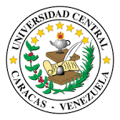

DOCTORADO · 2016
Doctora en Ciencias de la Computación

Universidad Central de Venezuela — UCV
Mención: Ingeniería de Software.
Centro de Ingeniería de Software y Sistemas (ISYS).
Líneas de especialización
- Metodología de desarrollo de software orientada a objetos.
- Modelos, métodos, técnicas y herramientas de desarrollo de software.
- Interacción humano-computador.
- Interfaces de usuario.
- Patrones de diseño.
- Calidad del software.
- Componentes y reutilización de software.
- Métricas de Ingeniería de Software.
- Desarrollo de aplicaciones basadas en Internet.
- Arquitectura de software.
- Ingeniería orientada a modelos.